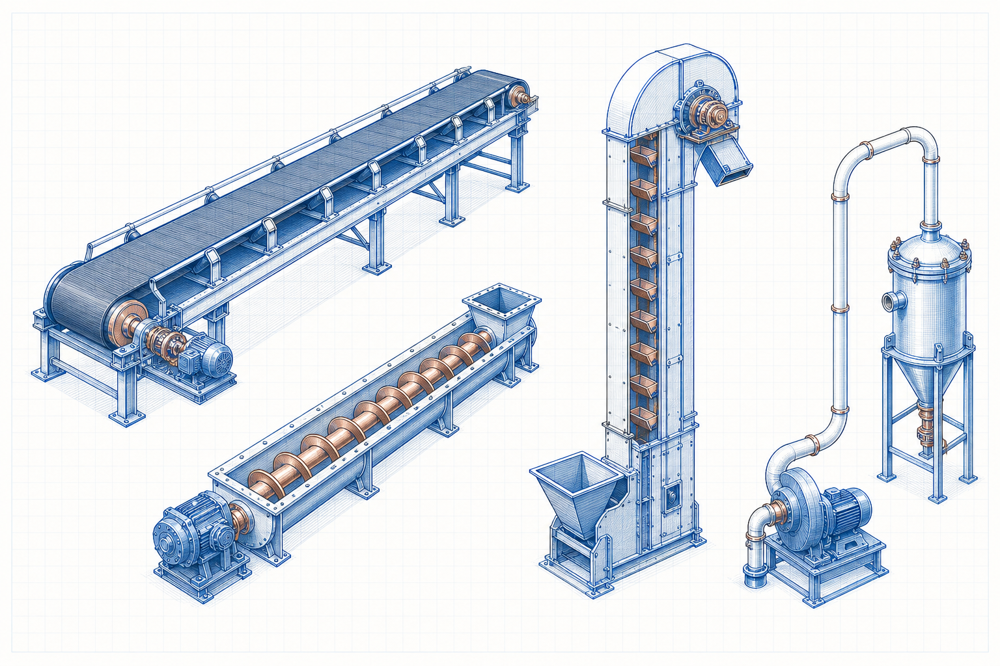

Belt Conveyors
Flat, troughed, pipe, sidewall, cleated, shuttle and reversible belt conveyor systems.
Equipment category IndustrialCalculation HubSearch topics, tools, articles...
IndustrialCalculation HubSearch topics, tools, articles...Level 2 equipment family
Explore the equipment that transfers bulk solids and unit loads horizontally, vertically and through pipelines across industrial facilities.

Explore by category
Flat, troughed, pipe, sidewall, cleated, shuttle and reversible belt conveyor systems.
Equipment categoryU-trough, tubular, inclined, vertical and twin-screw conveyor arrangements.
Equipment categoryDilute- and dense-phase pressure and vacuum conveying systems for bulk solids.
Equipment categoryEn-masse, flight, apron, pan and submerged-scraper conveying equipment.
Equipment categoryBucket elevators, vibratory trough, roller, slat and pallet conveyor applications.
Equipment category